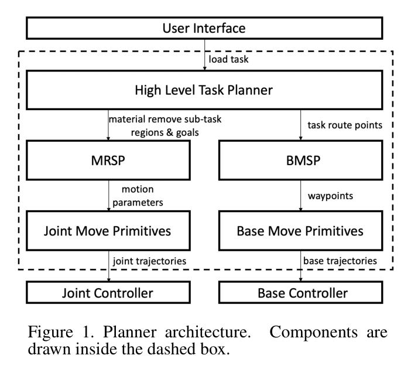
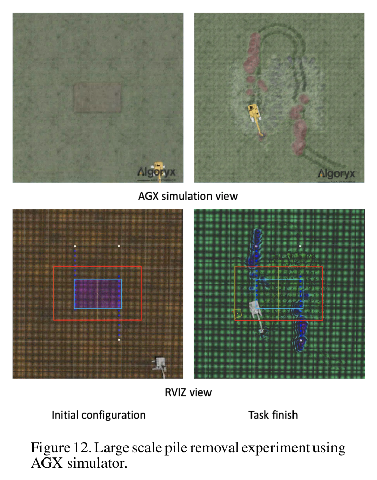

Hierarchical Planning for Autonomous Excavator on Material Loading Tasks
Liyang Wang, Zhixian Ye, Liangjun Zhang · 38th International Symposium on Automation and Robotics in Construction (ISARC 2021)
한줄 요약 — 도랑·파일 제거·대규모 상차를 장비 도달범위에 맞춘 route point와 local task region의 순서로 나누고, MRSP의 공격점·굴착·덤핑 루프와 BMSP의 Hybrid A*·MPC 주행을 공통 motion primitive로 연결한다. 36.6톤 실차와 67톤 AGX 모델에서 작업분할부터 저수준 유압명령까지 이어지는 계층형 계획을 검증했다.
1.연구 배경 및 동기
서로 다른 토공 작업을 하나의 계획 계층으로 연결하기
자율굴착 연구는 작업영역 분할, 버킷 궤적, 유압제어 같은 개별 모듈에서 진전했지만 사용자 목표를 차체 이동과 반복 굴착 명령으로 끝까지 내리는 공통 구조는 부족했다. 도랑은 후진하며 지면 아래를 파고, 파일 제거는 전진하며 지표 위 재료를 없애며, 넓은 파일은 여러 열과 층을 순회한다. 논문은 작업마다 planner를 새로 만드는 대신 사용자 작업-하위작업-motion primitive-제어기의 계층을 정의한다.
굴착기는 팔로 재료를 제거하는 구간과 차체를 다음 정차점으로 옮기는 구간을 교대로 수행한다. 고수준 planner가 route point와 local task region을 정하고, MRSP와 BMSP가 지역 목표를 푼다. dig·dump·base-move primitive가 관절·차체 궤적을 만들며 PID·MPC와 유압 lookup table이 실행한다.

원문 Figure 1 · PDF p.3 — Figure 1. Planner architecture. Components are drawn inside the dashed box.
선행 연구의 한계
기존 연구는 작업영역 분할과 고수준 순서계획 또는 단일 굴착 궤적·제어 중 한 수준에 집중해 전체 계획 사슬을 일반화하지 못했다.
wheel loader용 finite-state motion primitive 구조는 작업장치와 작업주기가 다른 굴착기에 그대로 적용하기 어렵고 재료 제거 하위작업의 정의도 부족했다.
작업별로 별도 planner를 구현하면 도랑, 파일 제거, 트럭 상차처럼 목표 형상과 이동방향이 다른 작업 사이에서 재사용하기 어렵다.
차체 이동과 팔 굴착을 별개로 다루면 정차 위치의 도달범위, local region의 잔여 높이와 다음 이동을 일관된 종료조건으로 연결하기 어렵다.
이 연구의 기여
사용자 작업을 재료 제거 하위작업과 차체 이동 하위작업으로 분해하는 고수준 계획 계층을 제안했다.
장비의 최소·최대 도달거리와 overlap으로 sector 또는 rectangle local task region과 route point를 자동 생성했다.
MRSP와 BMSP를 dig·dump·base-move primitive 및 PID·MPC 제어에 연결해 팔과 차체를 한 구조에서 다뤘다.
도랑, 파일 제거, 대규모 파일 제거의 서로 다른 분할 규칙과 이동방향을 동일 planner architecture로 표현했다.
36.6톤 XCMG490DK 실차와 67톤 CAT365CL AGX 시뮬레이션 모델에서 작업 완료 계획을 검증했다.
2.방법론 및 시스템 구성
고수준 계획기의 입력은 사용자가 지정한 작업영역과 목표높이이며 출력은 순서화된 excavator route point와 각 지점의 material-removal sub-task region·goal이다. 장비 reach의 최소 r_min, 최대 r_max와 region overlap r_o를 이용해 도랑은 좁은 직사각형 후진 작업, 파일은 넓은 부채꼴 전진 작업으로 분할한다. 대규모 파일은 최대 처리폭 q보다 넓으면 여러 column으로 나누고, LiDAR 수평 시야를 고려해 180도 sector를 다시 작은 sector와 필요 높이층으로 쪼갠다.
각 정차점에서 MRSP는 local zone, 목표높이, dump mode와 현재 base·joint·LiDAR 상태를 받아 종료조건까지 POA 선택-dig-dump를 반복한다. 정차점 사이에서는 BMSP가 LiDAR 점유지도와 현재·목표 2D pose로 Hybrid A* waypoint를 만들고 unicycle model MPC가 추종한다. joint primitive는 PID가 관절속도를, base primitive는 MPC가 차체명령을 계산하며, 두 명령은 lookup table로 굴착기의 유압 current 입력에 매핑된다.
처리 파이프라인
1
작업 유형과 이동방향 판별
목표재료가 지표 아래인 도랑은 가까운 재료를 제거한 뒤 후진하는 backward-movement task로, 지표 위 파일은 앞 재료를 없앤 뒤 전진하는 forward-movement task로 분류한다. 이 방향성이 route point의 순서와 마지막 local region 경계를 결정한다.
2
local task region 생성
장비 base 좌표계에서 중심각 α, sector 각도/rectangle 폭 β, 근단 r_min, 원단 r_max로 region을 정의한다. 굴착·덤핑 중 base가 움직여도 global zone이 바뀌지 않도록 map-frame center와 현재 pose로 local region을 갱신한다.
3
도랑·파일 route point 분할
유효 이동간격 d와 작업길이 l로 하위작업 수를 계산한다. 좁은 도랑은 rectangle을 뒤로, 넓은 파일은 sector를 앞으로 배치하고 마지막 경계를 조정해 길이를 덮는다.
4
대규모 파일의 열·층 분해
작업폭이 q보다 크면 여러 column으로 나눈다. 각 180도 sector를 LiDAR FOV에 맞춘 중첩 sector로 쪼개고 두꺼운 파일은 여러 높이층으로 반복한다. column 사이는 연약지반의 작은 선회반경을 피하는 반원 U-turn으로 연결한다.
5
MRSP 공격점과 굴착 루프
local region의 최고점과 평균높이를 구한다. base 원점-최고점 직선에 offset을 주어 POA x,y를, 평균높이로 z를 정한다. POA·관입깊이·관입길이·끌기길이·tilt의 7개 값으로 dig primitive를 만들고 목표높이까지 반복한다.
6
dump mode와 종료조건
고정 base-frame point, 동적 floating point, 인지한 truck bed의 낮은 지점이라는 세 dump mode를 지원한다. rigid는 최고점 h<g, regular는 평균 a<g이면서 h<g+b, loose는 평균 a<g일 때 region 완료로 판단한다.
7
BMSP 경로와 유압 실행
BMSP는 목표 B=[x_m,y_m,Θ], LiDAR occupancy map과 현재 base pose로 Hybrid A*의 smooth collision-free waypoint를 만든다. unicycle MPC가 base를 추종하고 joint PID와 함께 생성한 속도명령을 유압 lookup table의 current command로 바꾼다.
고수준 planner는 어느 정차점에서 어느 region을 어떤 높이까지 처리할지만 정한다. MRSP와 BMSP는 작업 종류에 독립적인 지역 목표를 받아 motion parameter 또는 waypoint를 출력하고, primitive가 실제 궤적으로 바꾼다. 새 작업은 분할 규칙을 추가하면서 기존 굴착·덤핑·주행 실행기를 재사용할 수 있다.
고수준 출력: route point, local task region, local goal
하위 planner 출력: 굴착 파라미터 또는 차체 waypoint
primitive 출력: joint trajectory 또는 base trajectory
장비 reach 기반 작업영역 완전 커버
region 분할은 버킷의 안전 도달범위를 직접 쓴다. overlap은 정차점 사이 누락을 막고 마지막 경계는 목표길이에 맞춘다. 넓은 작업은 column·sector·layer로 나누고 큰 반경 U-turn으로 연약지반의 제자리 선회를 피한다.
rectangle과 sector 두 region 형상
전진 파일·후진 도랑의 방향별 분할
large-scale pile의 column-sector-layer 계층
MRSP의 지형 반응형 반복 굴착
MRSP는 매 cycle의 LiDAR 점군에서 최고점과 평균높이를 다시 읽고 POA와 region 좌표를 base 변화에 맞춰 갱신한다. 종료 엄격도도 선택할 수 있다. 다만 최고점 기반 POA와 굴착 파라미터는 토질·힘 불확실도를 명시적으로 추정하지 않는다.
POA를 최고점 방향 offset과 평균높이로 정의
7개 dig motion parameter
fixed·floating·truck dump mode와 3개 종료 엄격도
Hybrid A*와 MPC의 차체 이동 계층
BMSP는 2D pose와 점유지도를 사용한다. Hybrid A*가 waypoint를 만들고 unicycle MPC가 추종하며 최종 명령은 유압 current로 변환된다. arm과 base의 교대 실행은 연결하지만 경사·지지면·무게중심이 없어 거친 지형의 안정도 검증이 필요하다.
2D target pose B=[x_m,y_m,Θ]
LiDAR occupancy map 기반 Hybrid A*
unicycle model MPC와 hydraulic lookup table
4.실험 결과
실험 환경·장비·데이터
실차는 운용중량 36.6톤 XCMG490DK이며 centimeter accuracy RTK 10Hz, 관절각 100Hz·0.1도 정확도, Livox Mid-100 LiDAR point cloud 10Hz를 사용했다.
원문 Figure 11 · PDF p.7 — Fig. 11 shows 4 moments during the removal experi- ment setup, wherethe base located in different route points. Based on the pile size, our algorithm automatically set 4 route points and 4 material remove sub-tasks.

원문 Figure 12 · PDF p.7 — Figure 12. Large scale pile removal experiment using AGX simulator.
핵심 결과 해석
36.6톤 실차 도랑 시험에서 목표 10.0×1.5×2.0m를 planner가 5개 route point와 5개 재료 제거 하위작업으로 분해했고 20분에 완료했다. 파일 제거는 8.0×5.6×0.5m 목표를 4개 route point와 4개 하위작업으로 나누어 16분 이내에 마쳤다. 이 결과는 하나의 architecture가 후진형 도랑과 전진형 파일이라는 상반된 route logic을 처리하고, 매 위치의 굴착·덤핑 반복과 차체 이동을 연결했음을 보여준다.
대규모 파일 제거는 원래 36.0×22.5×0.5m 작업을 계획하되 계산시간을 줄이기 위해 AGX에서 pile을 20.0×12.0×0.5m로 설정했다. 67톤 모델은 첫 column을 처리한 뒤 반원 U-turn으로 두 번째 column으로 이동했고, 완료 후 task zone의 height color가 균일해졌다. 다만 논문은 잔여체적, 형상오차, 주행 안정도나 다른 계획기 대비 효율을 정량 비교하지 않아 일반성 주장은 완료 사례 중심으로 해석해야 한다.
정량 결과
평가 항목
정량 결과
조건·맥락
원문 근거
도랑 작업 완료
10.0×1.5×2.0m, 20분
XCMG490DK 실차, route point 5개·재료 제거 하위작업 5개
PDF p.7
파일 제거 완료
8.0×5.6×0.5m, 16분 이내
XCMG490DK 실차, route point 4개·재료 제거 하위작업 4개
PDF p.7
실차 플랫폼 규모
36.6톤
XCMG490DK, RTK·Livox Mid-100·관절센서
PDF p.6
대규모 파일 시뮬레이션 크기
20.0×12.0×0.5m
계획 목표 36.0×22.5×0.5m를 계산시간 절감을 위해 축소, 67.0톤 CAT365CL AGX 모델
PDF p.7
실패 사례와 경계조건
현재 BMSP는 2D 가정이라 경사와 단차가 큰 지형에서 차체 roll·pitch, 지지면과 전복 여유를 경로계획에 반영하지 못한다.
large-scale 시뮬레이션에서 재료를 지면에 바로 덤프해 base 이동 궤적 부근에 작은 pile이 남았다.
MRSP의 최고점 기반 POA와 기하 파라미터는 단단한 재료나 예상 밖 저항에서 최적 굴착량과 실행 가능성을 보장하지 않는다.
형상오차나 잔여체적 기준선이 없어 완료시간이 계획 품질과 생산성의 전부를 설명하지 못한다.
이 논문의 가치는 계획 계층의 인터페이스다. 작업계획은 어느 위치에서 어느 region을 처리할지, 동작계획은 굴착·주행 primitive, 제어기는 장비별 유압명령을 담당한다. 이 분리는 장비 크기나 상차·트렌칭이 달라도 공통 planner를 유지하고 하위 제어만 교체하는 기반이 된다.
현장 확장에는 2D route를 3D 주행성·안정도 모델에 연결하고, MRSP 종료조건을 높이뿐 아니라 잔여체적·적재량·접촉저항으로 보강해야 한다. 이후 AES와 TaskNet은 이 구조를 멀티모달 인지와 학습 작업분해로 확장하며, 본 연구는 명시적 모델 기반 기준선을 제공한다.
작업-하위작업-primitive 계약을 유지하면 새로운 토공 작업은 고수준 분할만 추가하고 검증된 하위 실행기를 재사용할 수 있다.
3D 주행성·질량중심 제약을 BMSP 비용에 넣어 정차 pose의 접근 가능성과 전복 여유를 함께 최적화해야 한다.
버킷 체적센서와 유압 압력으로 MRSP의 목표높이 종료조건을 보정하면 잔여재료와 과굴착을 줄일 수 있다.
동적 작업자·트럭 인지와 안전정지·복구 상태를 고수준 순서계획에 포함하면 실제 협업 현장으로 확장할 수 있다.
7.전체 그림·표
본문 핵심 위치에 배치하지 않은 원문 Figure와 Table을 원문 페이지 순서로 수록한다.